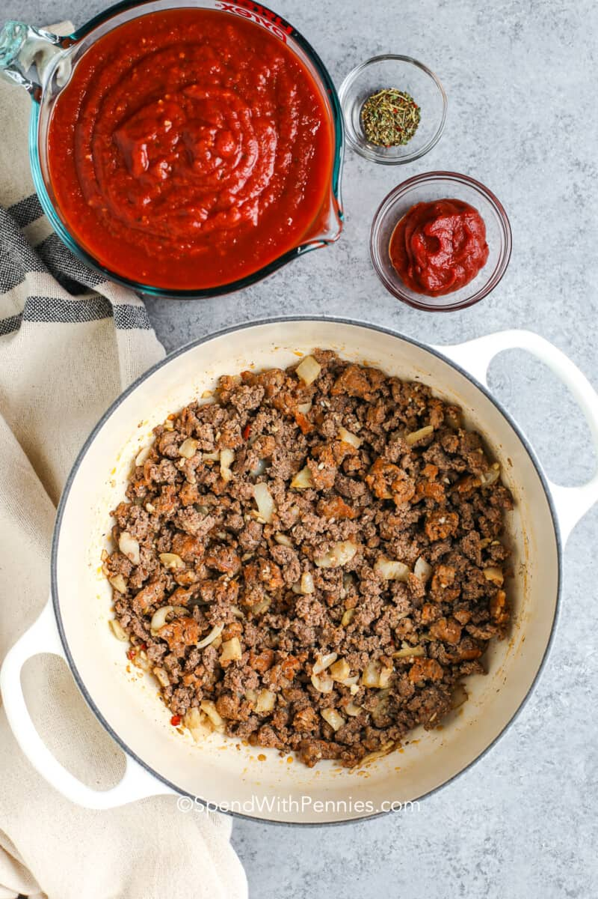
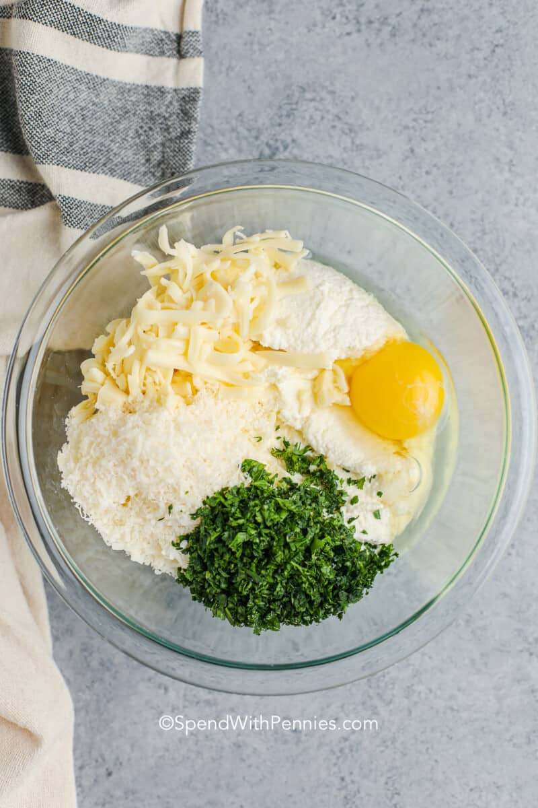

Homemade Lasagna is a family favorite and a great way to feed a crowd.
While there are a few steps, this lasagna recipe is relatively easy to make and has so much flavor.
Cheese Filling: For this classic lasagna recipe, the cheese filling has ricotta and parmesan with seasonings. You can make homemade ricotta cheese or replace it with cottage cheese.
Meat: I use both Italian sausage and ground beef for great flavor. If using all beef, add ¼ teaspoon of fennel seeds and some Italian seasoning to the meat mixture for flavor, or make my homemade Italian sausage.
Sauce: To keep this sauce quick, I use pasta sauce or marinara sauce (it’s easy to make from scratch with crushed tomatoes and canned tomatoes if you’d prefer). If using store-bought sauce, I love Rao’s for flavor.
Spinach (variation): Spinach is optional but delicious in lasagna. For spinach lasagna, thaw 10oz of frozen spinach, squeeze out the moisture, and add it along with the cheese layer.
 While homemade lasagna may have a few steps, each step is easy – and I assure you it’s worth the time; the perfect Italian meal!
Once removed from the oven, let the lasagna sit/rest for at least 15 minutes (up to 45 minutes is fine, it will retain the heat well). This will allow it to thicken up a bit and help it keep its shape when cut. Resting is not required when reheating.

Once you have prepared the meat sauce and the cheese mixture, you’re ready to layer. This is the order of layers:
Serve with a big slice of homemade Garlic Bread and garnish with fresh basil or a couple of tablespoons of parsley. Finish the meal with a Caesar salad or Italian salad.
 Odin Recipe Homepage
Odin Recipe Homepage